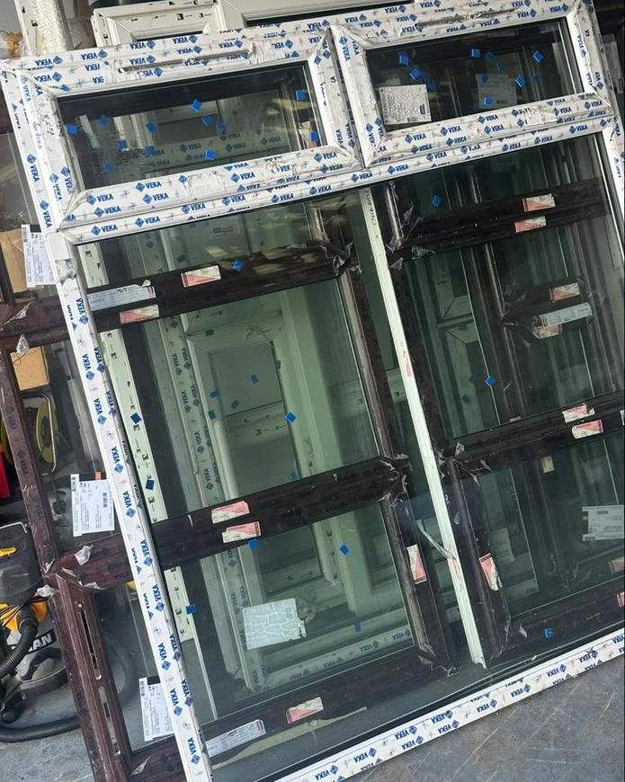
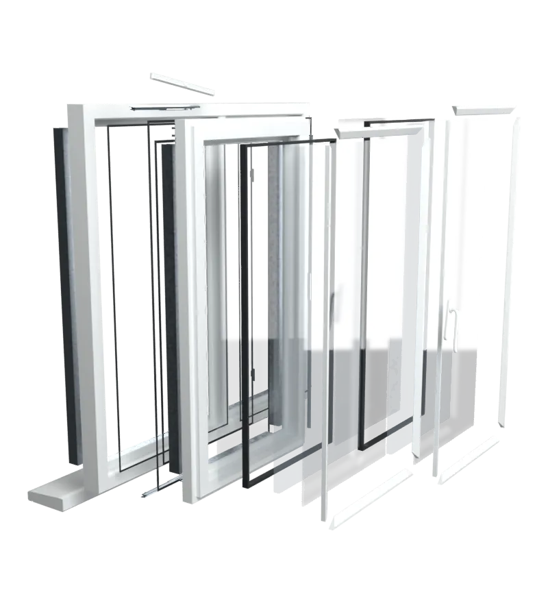
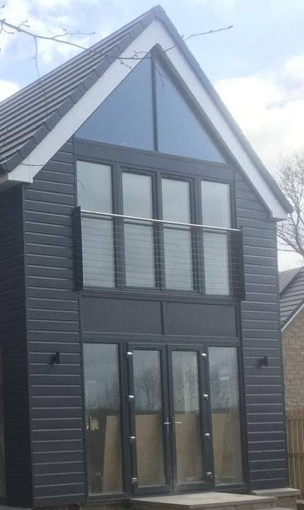

Windows in Denny, for the trade and DIY
uPVC and aluminium, made to your sizes. The white frames on our rack come wrapped in VEKA's film.
5.0 on Google from 3 reviews. 100% recommend on Facebook from 9.
A Tempany Web Studios concept. Not Superior's live site.
uPVC and aluminium, made to your sizes. The white frames on our rack come wrapped in VEKA's film.
5.0 on Google from 3 reviews. 100% recommend on Facebook from 9.

1200 x 1200 mm, with one side-hung opener and a fixed light, drawn to the sizes VEKA publishes for its M70 profile. It starts wrapped in film, as the white frames on our rack are.
The film comes off first. Under it, white uPVC.

Figures: VEKA M70, as published by VEKA on NBS Source, read 27 November 2026.
To confirm with Donna: which VEKA system Superior stocks.
32 parts
Counted from the model as this page loads. The four sizes VEKA publishes are drawn to the millimetre. Everything else is a plain stand-in: the chamber shapes, reinforcement, gaskets, cill, mullion, glass and hardware.
Back together. VEKA lists M70 as tested to PAS 24.
VEKA's own figures for M70, and the sizes the model above is drawn to.
| VEKA M70 | The model above | |
|---|---|---|
| Profile | 70 mm deep, multi-chamber PVC-U | 70 mm deep |
| Outer frame sightline | 55, 67 or 80 mm | 67 mm |
| Casement sash | 76 mm | 76 mm |
| Glazing beads | 28 to 44 mm | 28 mm |
| Glazing | Double or triple | Double, as a stand-in |
| Whole-window U-value | As low as 1.2 W/m²K, double glazed | Not modelled |
| Reinforcement | Steel or aluminium, where required | A plain stand-in |
| Security | Tested to PAS 24 | |
| Air permeability | Class 4, BS 6375-1 | |
| Watertightness | Class 8A, BS 6375-1 | |
| Wind load | AE2400 Pa | |
| Profile made in | Burnley | |
On our rack: white, and a rosewood woodgrain frame.
Source: VEKA's M70 casement window listing on NBS Source, verified by VEKA, read 27 November 2026. VEKA and M70 are VEKA's names; this page is not made or approved by VEKA.
To confirm with Donna: which VEKA system you stock, the glass (unit thickness, argon or air, toughened), the hardware brand and lock type, and colours and foils beyond white and rosewood.



"Great quality window & unbeatable price"
Helen, on Facebook
"Spoke with Donna, lovely and helpful. Arranged my order super quick and installed very quickly."
Claire, on Google
"Used Superior Trade Frames as part of my self build kit."
Michelle, on Facebook
5.0 on Google from 3 reviews, checked 27 November 2026, when Claire's review was about four months old. 100% recommend on Facebook from 9, checked 17 November 2026.
The white frames on our rack come wrapped in VEKA's film, so at least that stock is VEKA uPVC. The model is drawn to VEKA's published sizes for M70.
To confirm with Donna: which VEKA system you stock.
Some orders are fitted: Claire's Google review says hers was 'installed very quickly'.
To confirm with Donna: whether you fit or supply only, and where.
M70 takes double or triple glazing, by VEKA's listing.
To confirm with Donna: the unit thickness, argon or air, and toughened glass.
White, and the rosewood woodgrain on our rack.
To confirm with Donna: other colours and foils.
Send your sizes on the Get a price page, call 01324 826500 or email sales@superiorscotland.co.uk.
Call us, or send your width and height in millimetres: the Get a price page draws it and writes the email to Donna.
15 Winchester Avenue, Denny. Monday to Thursday 7:30am to 4:30pm, Friday 7:30am to 3pm.
Analytics stays off unless you accept.